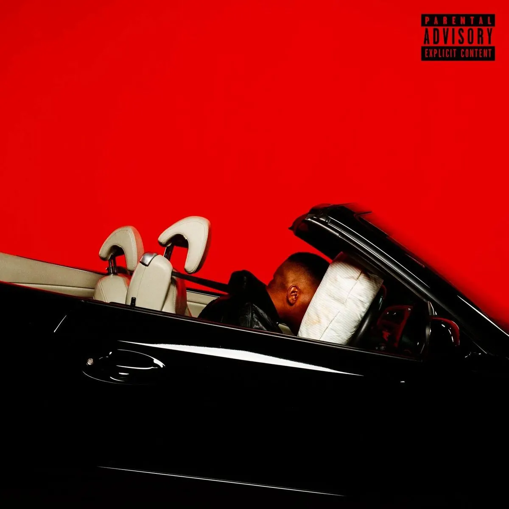

Publié le 9 octobre 2026

Le rap indépendant français est en deuil après une terrible nouvelle. Le rappeur Prince Waly, de son vrai nom Moussa Magassa, est décédé le 4 octobre 2026 à l'âge de 34 ans. Son label I See Colors a officialisé la triste nouvelle dans un communiqué touchant. L'artiste de Montreuil luttait courageusement depuis huit ans contre de graves problèmes de santé. Il a d'abord vaincu un cancer du thymus diagnostiqué en 2019. Puis une maladie auto-immune rare, un pemphigus paranéoplasique, a fini par l'emporter. Cette affection rare avait notamment touché ses cordes vocales ces derniers mois. Malgré la douleur, il est resté digne face à l'épreuve jusqu'au bout.
Pourquoi le départ de Prince Waly touche-t-il autant l'underground ?
Le décès de Prince Waly ébranle profondément le rap indépendant français car il incarnait une forme d'intégrité artistique absolue. Né à Montreuil en Seine-Saint-Denis, Moussa Magassa a marqué son époque par un style unique. Son écriture ultra-cinématographique se distinguait de la masse par une recherche constante de la rime parfaite. Son élégance naturelle, tant dans sa musique que dans son attitude, forçait le respect de toute la scène. Au-delà de ses textes affûtés, c'est aussi son immense courage face à la maladie qui a marqué les esprits. Pendant huit années de lutte silencieuse, il n'a jamais cessé de créer avec une passion dévorante. Des artistes majeurs comme Alpha Wann, Dinos ou Freeze Corleone ont collaboré avec lui, reconnaissant en lui un pair d'exception. Son départ laisse un vide immense dans le cœur des amateurs de rap de plume.
Comment s'est construit l'héritage musical de Prince Waly ?
L'héritage musical de Prince Waly s'est bâti à travers une discographie exigeante et des performances scéniques marquantes. Il commence sa carrière au sein du duo Big Budha Cheez avec son acolyte Fiasko Proximo. Ensemble, ils imposent un rap rétro inspiré des années quatre-vingt-dix. En solo, Prince Waly franchit un cap technique avec des maxis marquants. Son premier album officiel, intitulé Moussa, sort en 2022 et s'impose comme son chef-d'œuvre. Cet album intime raconte à la fois son combat médical et sa passion pour le cinéma. Prince Waly était aussi un artiste de scène hors pair. Ses prestations marquantes lors des événements parisiens attiraient un public fidèle de passionnés. Ceux qui consultent régulièrement notre agenda des concerts rap à Paris se rappelleront son énergie lumineuse. Il partageait aussi sa vie et sa musique avec sa femme, la chanteuse Enchantée Julia.
Quels sont les projets marquants de sa discographie ?
La discographie de Prince Waly témoigne d'une quête permanente de perfection artistique. Ses projets solos et collectifs ont tous marqué les esprits par leur direction esthétique très soignée, portée par des clips mémorables.
| Année de sortie | Type de projet | Titre du projet |
|---|---|---|
| 2016 | EP Solo | Junior |
| 2019 | EP Solo | BOY Z |
| 2022 | Album Solo | Moussa |
Comment la scène rap rend-elle hommage au prince de Montreuil ?
Depuis l'annonce de sa disparition, les hommages se multiplient sur les réseaux sociaux. Producteurs, beatmakers et rappeurs saluent à l'unanimité la mémoire d'un homme bon. Le milieu indépendant se rappelle d'un artiste d'une grande bienveillance. Son entourage décrit un homme au charisme fou qui savait rassembler les gens. Ses concerts parisiens étaient de véritables célébrations de l'art du rap. Pour notre équipe chez Nova Corporation, Prince Waly représentait l'essence même de l'underground. Il faisait de la musique pour l'amour de l'art, loin des calculs commerciaux. Ses collaborations régulières avec des producteurs talentueux ont redéfini la couleur du rap indépendant. Sa voix restera gravée dans l'histoire à travers les classiques qu'il nous laisse en héritage. Nous pensons fort à sa famille, à ses proches et à sa femme Julia.